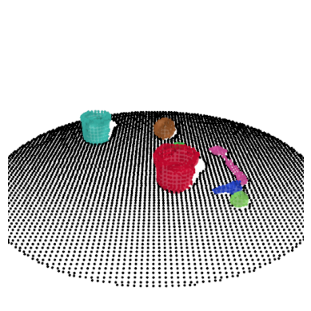

V-PRISM: Probabilistic Mapping of Unknown Tabletop Scenes

Contributions
- Formulate reconstruction as multi-class mapping problem
- A Bayesian framework for building continuous segmentation maps of tabletop scenes
- An object-centric sampling method to encode depth information

Background: Hilbert Maps
![Figure from [1], Input data on Left, Hilbert map on Right, SVM in Middle](./hilbertmaps.png)

- Hilbert Maps, introduced in [1], are a technique for mapping an environment via depth measurements
- First, a dataset is created with terminal points of each ray and negative sampled ones
- Next, a set of hinge points are constructed in a grid
- Then, regularized logistic regression is run in order to find weights w for a map m with occupancy probability: m(x) = \sigma (w^\top \phi(x)) where \phi is a feature transform constructed from the hinge points
Background: Bayesian Hilbert Maps
- Hilbert Maps were given a Bayesian treatment in [2]
- Weights w were modeled as a Gaussian w \sim \mathcal N(\mu, \Sigma)
- Variational inference as described in [3] was performed to recover a Posterior distribution over the weights, \mathcal N(\hat \mu, \hat \Sigma). This involved an iterative EM algorithm.
- Predictions were made by approximating \mathbb E_w [\sigma (w^\top \phi(x))]
- Because of the Bayesian treatment, the method exhibits principled uncertainty
![Figure from [2]](./bhm.png)
Problem Setup
- We phrase the scene reconstruction problem as a mapping problem
- Given a depth observation (point cloud) of a scene and a correct instance segmentation, construct a map that maps points in 3D space to one of the segmentations (or empty space)
- This is a multiclass segmentation/mapping problem, because we want to avoid interpenetration between the reconstructions (see image below)
- We assume we know our camera position (relative to point cloud) and that points in between the camera and point cloud are unoccupied
- We assume each object lies on or above a planar surface such as a tabletop

Method Overview

- We want to adapt a similar strategy as Bayesian Hilbert Maps [2] for our task
- First, we perform negative sampling, but adapt it to an object-centric mapping task
- Then we run an EM algorithm with our constructed dataset to create a
probabilistic multiclass map
- This means we will need to adapt the original EM algorithm from [3] to extend to a softmax activation function
Negative Sampling
- Points at end of the ray are labeled as occupied
- Randomly sample points along the rays that are specifically nearby the objects
- Find the table with RANSAC [4] and sample points underneath it nearby the objects
- Run grid subsampling from [5] in order to reduce the total amount of points and make the data more uniform

Softmax EM Algorithm: Training
- We model weights as a matrix W where each row is normally distributed: W_k \sim \mathcal N (\mu_k, \Sigma_k)
- Using math from [6], which builds off of [3], We can develop an EM algorithm which iterates the following updates:
\hat{\Sigma}^{-1}_k = \bar{\Sigma}^{-1} + 2 \sum_{i = 1}^n \lambda(\xi_{i,k}) \phi( x_i) \phi( x_i)^\top \hat{\mu}_k = \hat{\Sigma}_k \left[ \bar{\Sigma}^{-1}_k \bar{\mu}_k + \sum_{i = 1}^n \left( y_{i, k} - \frac{1}{2} + 2 \alpha_i \lambda(\xi_{i, k}) \right) \phi( x_i) \right] \alpha_i = \frac{\frac{1}{2} (\frac{c}{2} - 1) + \sum_{k=1}^c \lambda(\xi_k) \mu_k^\top \phi( x_i)}{\sum_{k=1}^c \lambda(\xi_k)} \xi^2_{i, k} = \phi( x_i)^\top \Sigma_k \phi( x_i) + (\mu^\top_k \phi( x_i))^2 + \alpha_i^2 - 2\alpha_i \mu^\top_k \phi( x_i)

Reconstruction Quality


Example Scene

Example Scene

Example Reconstruction
Negative Sampling
- Ablation results of our negative sampling method in simulation suggest our negative sampling method is superior to alternatives:

Robustness
Here is a Qualitative example of reconstructing a noisy real world scene:
Point cloud 
Reconstruction 
Robustness
Here is a comparison with PointSDF [12]:

Uncertainty

- We compare uncertainty of V-PRISM [13] with a non-probabilistic alternative
- Uncertainty is high in heavily occluded areas of the scene in our method, but not the alternative’s